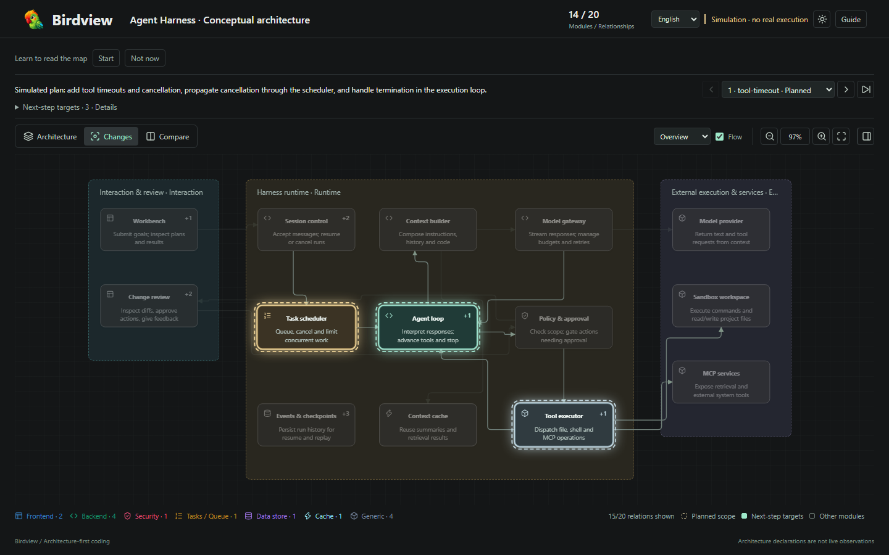

Architecture context
Stable module identities, ownership, relationships, and source evidence stay visible together.
ARCHITECTURE FIRST · AGENT READY
Birdview turns evidence-backed architecture and agent-declared activity into one clear, interactive map. Review the affected modules before code moves.
Map first.
Move with confidence.
A CALMER CODE REVIEW

Stable module identities, ownership, relationships, and source evidence stay visible together.
Planned modules light up while the surrounding system fades into context.
Validate JSON and render a self-contained HTML snapshot with no server required.
OPEN SOURCE · MIT LICENSE
Built for teams that want faster reviews without losing the shape of the system.